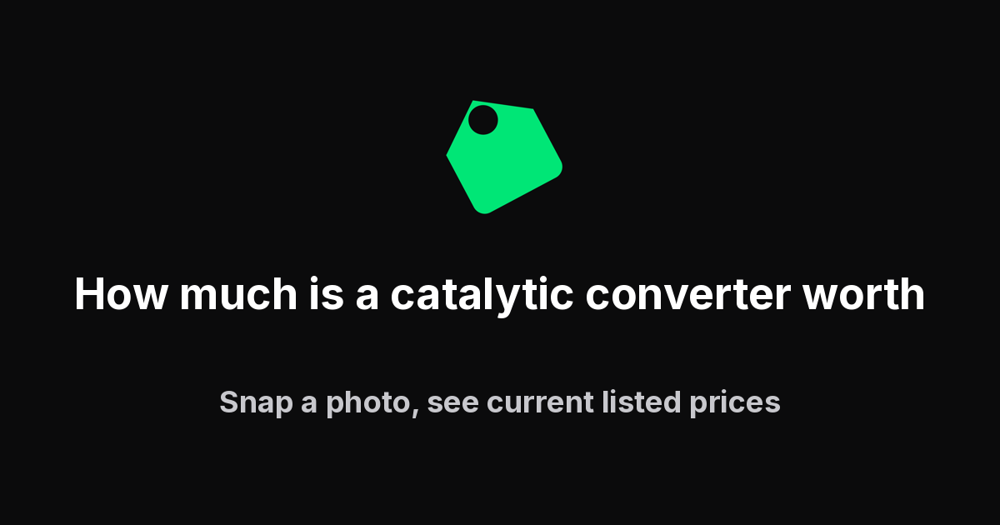

People often look up how much is a catalytic converter worth after a replacement on their own car, or after a unit they legally own is sitting in a garage, and then treat every converter as if it shared one national average. The first instinct is to copy a generic internet figure onto whatever shell happens to be in front of them. That is how an aftermarket replacement, or a hollowed-out or already-cut unit, gets talked about as if it were a genuine original part from a larger truck, and how a legally owned original converter gets sold on a stale average that was never a quote for that unit.
If you want a useful how much is a catalytic converter worth, check yours by photo. Start with ownership, identify the unit in your hand, and treat a licensed scrap yard quote as the practical check. That is what  How Much Is It Worth: Scanner is built to do.
How Much Is It Worth: Scanner is built to do.
A catalytic converter can have scrap value because of the platinum, palladium, and rhodium in the catalyst. The load of metal varies widely by vehicle, engine, and year, and by whether the converter is a genuine original part or an aftermarket replacement. Aftermarket units often contain less precious metal. A hollowed-out or already-cut converter may have little or no remaining value. A converter from a small car and a converter from a larger truck should not be assumed to share one price.
We will not invent a national average, and we will not invent a per-ounce payout. Those search-result averages are often stale, unsourced, or simply made up. A live precious-metal price is background context, not a converter quote. Converter bids are a scrap-yard matter, not a simple melt of a published coin table.
Start with ownership, not with a dollar figure. You should only sell a catalytic converter that you legally own. The usual case is a converter taken from a vehicle registered to you, after a lawful replacement, or a unit you otherwise obtained legally with a paper trail. Selling a stolen converter is a crime. Many yards will ask for identification, a vehicle registration, or other proof before they buy. This is not a how-to for removing a converter from someone else's car, and we will not help anyone price or sell a converter they do not own. If you are replacing a converter on your own vehicle, keep the old unit, the invoice, and the registration together. That paperwork is part of a lawful sale.
Photograph any serial or part number stamped on the shell, plus the vehicle make, model, year, and engine if you still have the car. Those details are what a yard uses to look the unit up. If the number is unreadable or the shell has been damaged, say so. Take or upload up to three photos.
The app shows the identification first. If the marks, the vehicle, or the part type looks off, you correct it before any price lookup. Then you see a Worth about figure, the listed range around it, a confidence level, and the live listings behind the number when there are enough of them. If the data is thin, the result is labelled as a rough estimate. The product will not invent a precise figure, and it is not a certified appraisal, an insurance valuation, a yard bid, legal advice, or an offer to buy. A photo is a first look at the marks and at public listings when they exist.
Want to try it? Start your free 3-day trial in the iPhone app at https://apps.apple.com/app/id6832980231. 3 free scans + 3-day unlimited trial. You can also scan it online free at https://howmuchisitworth.today/how-much-is-a-catalytic-converter-worth. On Android? Check https://howmuchisitworth.today/ for the Android release.
Most converters are sold to a licensed yard, not as a finished collectible. A yard quote is a bid, and bids differ by location, by metal markets, and by whether the buyer is sure of the identification. Public listings, when they exist, are asking prices. A sold or paid price can be lower. Be cautious of online offers that want you to ship a converter with no identification check. Lawful yards usually want ID and vehicle details.
Local rules vary, including in the United States, the UK, Australia, and Canada, and some places restrict cash purchases or require records. We do not buy converters. If we draft a listing, it is only appropriate for a converter you legally own, with the identification and paperwork a buyer should expect. You can copy a ready-made listing, with Quick sale, Fair price, or Top dollar, and save the scan to a collection. Public marketplaces such as eBay, Facebook Marketplace, or Gumtree are sometimes used, but a licensed yard quote remains the practical price check.
Do not invent a value from a photo of an unidentified shell. Describe damage, a missing serial, or a cut converter honestly.
Viral "average catalytic converter value" posts often treat every unit as the same, and they skip legal ownership, the serial, and the vehicle. We will not add another invented average. Compare a licensed yard quote for the unit you legally own, and review any listed range only when there are enough current public listings for a similar identified unit.
The app is free to start. Start your free 3-day trial. 3 free scans + 3-day unlimited trial.
If you are trying to find how much is a catalytic converter worth, check yours by photo. Download the app and scan your first unit free, or start at https://howmuchisitworth.today/how-much-is-a-catalytic-converter-worth.
I also wrote a Google Docs walkthrough of the same photo method: How Much Is It Worth: Scanner.